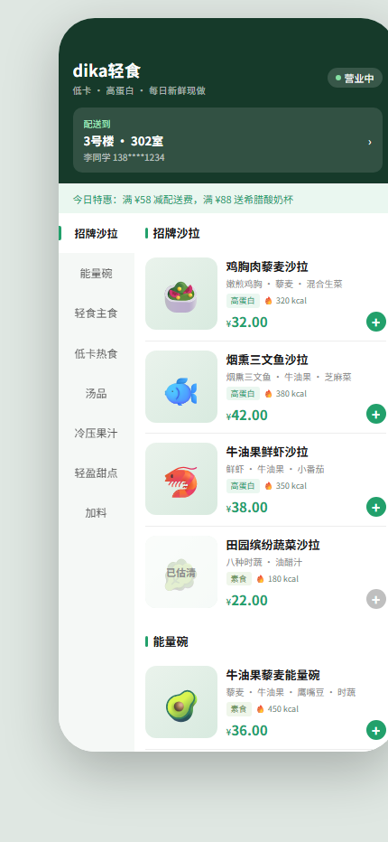
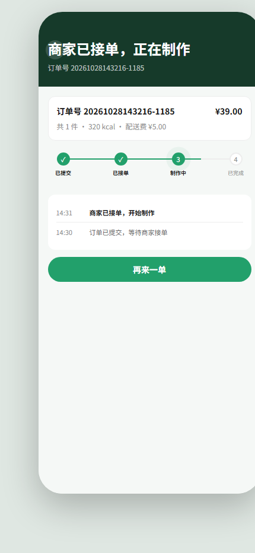
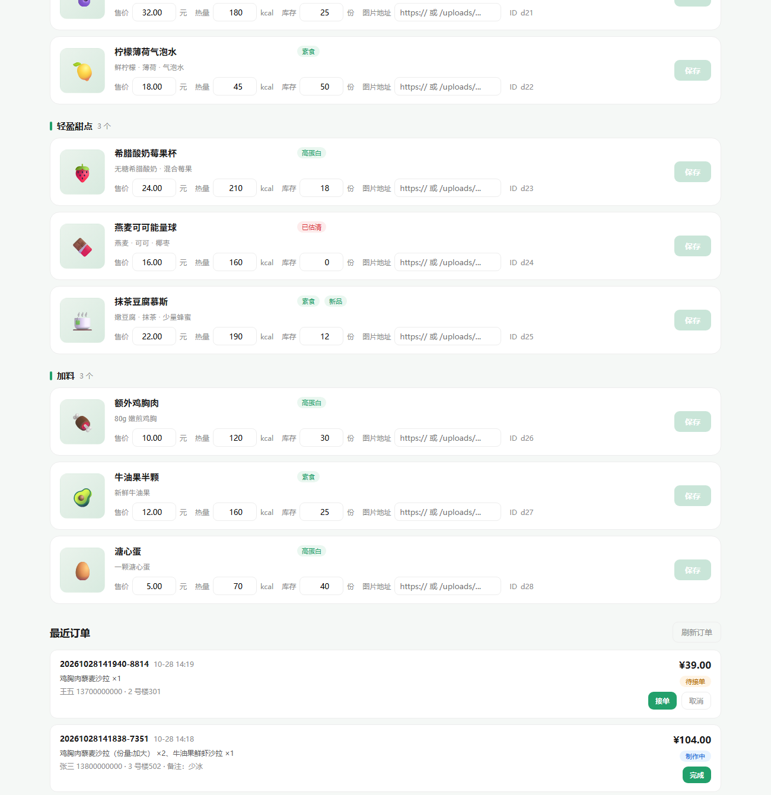
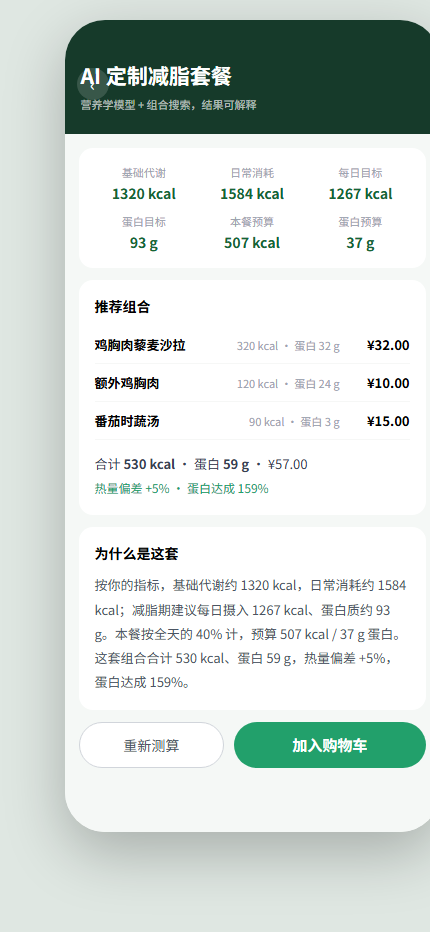
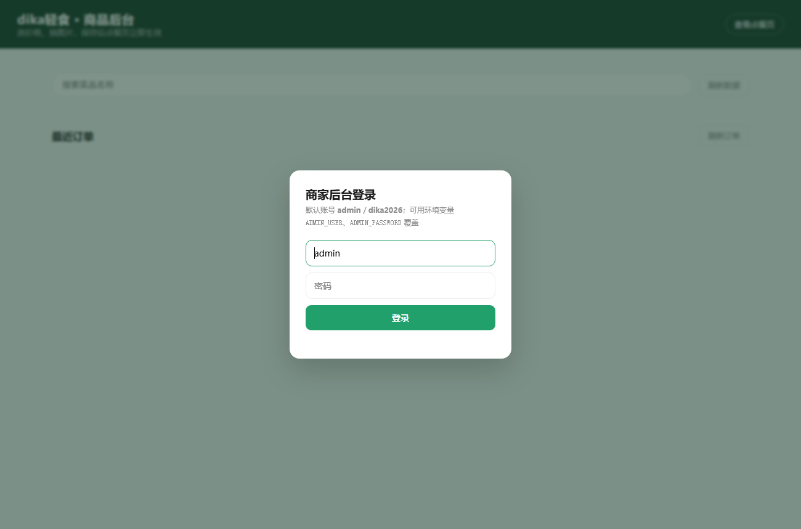

摘 要：小微轻食门店普遍缺一套用得起的点餐工具：菜单改不动、估清靠嘴说、下单后进入信息黑箱。本文设计并实现了一套面向此类门店的双端点餐系统，由微信原生小程序（生产端）、H5 页面（演示端）、商家后台与零第三方依赖的 Node.js 后端组成，四者共用同一套 REST 接口，业务逻辑只实现一次。系统在点餐链路之外增加了一个个性化套餐推荐模块：以 Mifflin-St Jeor 公式估算基础代谢，结合活动系数与目标系数得到单餐热量与蛋白预算，再在菜单的组合空间中做带约束的搜索，输出可解释的推荐结果；大模型仅用于文案润色且默认关闭，避免模型输出污染计算结果。开发过程采用意图驱动的 AI 协作方式：由人给出约束与验收标准，AI 产出实现，人负责取舍、复核与纠偏，全部迭代留有可检索的记录。系统共 33 次提交，通过 GitHub Actions 的语法检查、类型检查与接口冒烟，可在 10 分钟内本地复现。
Abstract: Small light-meal stores usually cannot afford a full ordering platform: menus are hard to update, sold-out items are announced verbally, and customers lose visibility after placing an order. This paper presents a dual-front-end ordering system for such stores, consisting of a native WeChat Mini Program (production), an H5 page (demonstration), a merchant console, and a zero-dependency Node.js backend sharing one REST API. An additional module recommends personalized meal sets: resting energy expenditure is estimated with the Mifflin-St Jeor equation, activity and goal factors yield a per-meal calorie and protein budget, and a constrained search over menu combinations produces an explainable recommendation. A large language model is used only to polish the wording and is disabled by default, so generated text never contaminates computed values. The system is developed through intent-driven AI collaboration, with 33 commits, a passing CI pipeline, and a ten-minute reproduction path.
轻食门店的典型经营形态是：菜品 SKU 不多（20–40 个）、但每天要改价格、估清（售罄）、换图；顾客以写字楼与校园周边为主，通过手机下单、到店自取或短途配送。这类门店通常没有预算去接一套 SaaS 点餐系统，一个「能改菜单 + 能收单 + 顾客能看到进度」的最小系统就足以覆盖 80% 的日常。
因此本作品服务两类角色：
| 角色 | 核心诉求 | 典型动作 |
|---|---|---|
| 顾客 | 快速看清今天有什么、热量多少、多少钱，下单后知道做到哪一步了 | 选规格 → 加购 → 填地址 → 下单 → 看进度 |
| 店主 / 店员 | 随时改价、估清、换图；新订单能听见看到，做完点一下 | 登录后台 → 改菜品 → 看订单 → 接单 → 完成 |
不是泛泛的「餐饮数字化」，而是三个可验证的具体问题：
calorie 作为菜品一级字段，点餐页与购物车实时累计总热量（共 990 kcal），并在后台可按菜品维护。stock 落到菜品上：库存 0 时点餐页直接置灰并显示「已估清」，接口层也会在下单时二次校验并返回 409。| 维度 | 本期做 | 本期不做（及原因） |
|---|---|---|
| 交易 | 下单、金额重算、库存扣减、状态流转 | 支付、退款、发票——需要支付资质与回调联调，个人赛周期内无法真实验证 |
| 履约 | 商家接单 / 完成，顾客端可见 | 骑手调度、路径规划——本项目不涉及真实配送体系，故不虚构骑手信息 |
| 账号 | 商家单账号登录（Cookie 会话） | 顾客注册体系——顾客以「订单号」作为凭证查询，降低使用门槛 |
| 部署 | 单机 Node 进程 + JSON 文件 | 容器化、多实例、CDN——与「零依赖」定位冲突，列入后续规划 |
| 端 | 模块 | 能力 |
|---|---|---|
顾客端/ | 菜单浏览 | 8 个类目 / 28 道菜品；左侧导轨与右侧列表双向滚动联动；售罄置灰；骨架屏加载 |
| 规格与购物车 | 多规格组（必选 / 可选）、加价项实时改单价、飞入动画、数量角标、热量合计 | |
| 地址与结算 | 地址簿增删改（localStorage）、配送费 ¥5 / 打包费 ¥2 / 满 ¥58 免配送、备注选填 | |
| 下单与跟踪 | 提交订单落库；跟踪页显示订单号、金额、进度条与状态时间轴，5 秒轮询自动刷新 | |
| AI 定制 | 输入性别 / 年龄 / 身高 / 体重 / 活动量 / 目标，得到这一餐的推荐组合，可一键加入购物车 | |
商家端/admin | 登录鉴权 | Cookie 会话（HttpOnly + SameSite）、连续 5 次失败锁定 60 秒、退出登录 |
| 菜品管理 | 行内改名称 / 描述 / 价格 / 库存 / 热量；图片上传（dataURL → 落盘）；经营概览统计 | |
| 订单管理 | 最近订单列表（明细 / 地址 / 备注 / 金额）、接单、完成、取消 |
| # | 参与方 | 动作 | 接口 / 数据 | 结果 |
|---|---|---|---|---|
| 1 | 顾客 | 选规格、加购、填地址，点「提交订单」 | POST /api/orders | 进入提交中态，按钮禁用防重复 |
| 2 | 服务端 | 校验菜品是否存在、单价是否低于基础价 | 读 menu.json | 不合法返回 400 |
| 3 | 服务端 | 校验库存是否充足 | 同上 | 不足返回 409，前端提示「仅剩 N 份」 |
| 4 | 服务端 | 重算小计、配送费、打包费、合计与总热量 | menu.fees 计费规则 | 金额以服务端结果为准，前端传值不采信 |
| 5 | 服务端 | 原子写菜单（先扣库存） | menu.json：临时文件 + rename | 对应菜品 stock 减少 |
| 6 | 服务端 | 原子写订单（落单 + pending 事件） | orders.json：临时文件 + rename | 生成订单号 yyyyMMddHHmmss-4位 |
| 7 | 服务端 | 返回订单号、金额与事件链 | 200 { code:0, data } | 顾客端清空购物车、跳转跟踪页 |
| 8 | 顾客 | 每 5 秒轮询订单状态 | GET /api/orders/:id | 返回状态、事件链，手机号脱敏 |
| 9 | 商家 | 登录后拉取最近订单 | GET /api/orders?limit=50 | 倒序排列，limit 上限 200 |
| 10 | 商家 | 点「接单」 | PUT /api/orders/:id { "status":"accepted" } | 事件链追加 accepted |
| 11 | 顾客 | 下一次轮询拿到 accepted | GET /api/orders/:id | 进度条推进到「制作中」，时间轴新增一条 |
| 12 | 商家 | 点「完成」 | PUT /api/orders/:id { "status":"done" } | 事件链追加 done |
| 13 | 顾客 | 拿到 done 后停止轮询 | — | 四个节点全部打勾，定时器清除 |
这条链路是本作品的「业务主干」：其余功能（改价、换图、估清）都是围绕它服务的输入。它同时满足三种视角——顾客看得见进度、店主点得动状态、评委点开链接能自己复现。



轻食用户最常问的两个问题是「我该吃多少」和「今天点哪个」。这两个问题可以被一个确定性模型回答，而不是每次调用大模型碰运气：
| 步骤 | 做法 |
|---|---|
| ① 基础代谢 | Mifflin-St Jeor：10×体重 + 6.25×身高 − 5×年龄 + (男 5 / 女 −161) |
| ② 每日消耗 | BMR × 活动系数（1.2 / 1.375 / 1.55 / 1.725） |
| ③ 目标与蛋白 | 减脂 0.8×、维持 1.0×、增肌 1.1×，并设热量下限；蛋白按体重 1.6 / 1.2 / 1.8 g·kg⁻¹ |
| ④ 单餐预算 | 每日目标 × 40%（用户点的是"这一餐"，不是全天规划） |
| ⑤ 组合搜索 | 主菜(1) × 加料(0-1) × 汤/果汁(0-1) × 甜点(0-1)，约 1500 个候选 |
| ⑥ 目标函数 | 蛋白达成 ×0.5 − 热量偏差 ×0.35 + 价格分 ×0.15 − 蛋白过量惩罚 ×0.2 |
几处取舍：蛋白质超过目标 1.3 倍开始扣分，否则算法会一路堆鸡胸；预算内无解时退化为「满足营养下限的最便宜组合」，并在结果里写出来；大模型只负责把结论写顺口，Prompt 里写死"不得改动任何数字"，没配 Key 时完全不参与。
模板：……这套组合合计 590 kcal、蛋白 55 g，热量偏差 +2%，蛋白达成 153%。
润色：……你这套组合合计 590 kcal、蛋白 55 g，热量只偏差 +2%，蛋白达成 153%，挺不错的，继续加油！
（11 个数字逐一比对一致；换成无效 Key 时 0.3 秒回落到模板文案，接口不受影响）
同样的输入必然得到同样的组合，没有随机数也没有模型采样，所以每一条推荐都能被复算。把推荐做成本地模型、只让大模型碰文案，原因就在这里。
这一章的疑问很具体：代码主要由 AI 产出时，人靠什么保证结果不走样。
本项目采用「意图驱动 + 强约束」的协作方式，人的职责集中在四件事，AI 负责在这些边界内产出实现：
| 人的职责 | 具体做法 | 在仓库中的痕迹 |
|---|---|---|
| 定边界 | 先声明硬约束（零第三方依赖、Node ≥18、单文件前端、数据落 JSON），再让 AI 出方案 | prompts/01 第 2 节、README 技术栈表 |
| 定验收 | 每个迭代先写「怎样算完成」，再写代码 | prompts/01 的 A/B/C/D 交付物表 |
| 做取舍 | 对 AI 给出的备选方案逐条拍板，记录否决理由 | prompts/0x 的「方案取舍」表 |
| 复核 | 不接受「看起来对」，必须给出状态码、日志或截图 | prompts/0x 的「验证记录」表 |
AI 走样的主要原因不是能力，而是上下文给错。本项目在每次迭代开场都会显式投喂三类信息：
preview/index.html 的提交按钮目前只做了前端校验并跳转，订单从未落库」。用代码事实替代模糊描述，AI 才不会重复实现已有能力。curl，Windows PowerShell 5.1 按 GBK 编码传递参数，GitHub 收到非法 UTF-8 直接返回 400。定位后改为「UTF-8 文件 + --data-binary @file」一次通过。这类问题的正确处理方式是把失败现象与原始响应体一起回灌给 AI，而不是只说「报错了」。
凡是涉及多文件改动的任务，统一按下面的五段式组织，避免「帮我做个后台」这种开放式指令：
【角色】你是我这个零依赖 Node 项目的实现者，改动范围限定在 server/server.js 与 admin/index.html。
【约束】不引入任何第三方依赖；不改变现有接口的返回结构；错误统一 { code, message }。
【现状】后台目前没有任何鉴权，PUT /api/dishes/:id 可被匿名调用；前端靠隐藏按钮"假装"受限。
【目标】实现 Cookie 会话登录，受保护接口未登录返回 401，登录失败限速。
【验收】给出未登录 401、错误口令 401、正确登录 200、登出后 401 四组实测结果。模板的价值在于把「验收标准」写进 Prompt 本身——AI 会主动围绕验收项组织实现，而不是堆功能。
仓库中 prompts/ 目录按迭代归档，每条记录都包含需求原文、AI 拆解、方案取舍、接口契约与验证记录。三次迭代的核心决策如下：
| 迭代 | 关键决策 | 被否决的方案与理由 |
|---|---|---|
| 01 订单落库 | JSON 单文件存储；服务端重算金额；下单扣库存 | SQLite（node:sqlite 在 Node 18 不可用）；前端算价传后端（金额可篡改）；不扣库存（后台改库存成摆设） |
| 02 登录鉴权 | Cookie + 内存 Map 会话；口令 SHA-256 后定时安全比较；按 IP 限速 | JWT（零依赖下要自己实现 HMAC 与过期校验，收益低）；Basic Auth（无法主动登出）；全局失败计数（一人锁死所有人） |
| 03 状态驱动跟踪 | 落 events 事件链；5 秒轮询；终态停止 | SSE / WebSocket（零依赖下握手与重连成本高，状态变化是低频事件）；用 updatedAt 推算时间轴（第二次改状态会覆盖第一次） |
| 04 小程序端与双端架构 | 原生小程序 vs 跨端框架；TS strict；模块级状态；双端字段对齐 | uni-app / Taro（3 页规模下编译与调试成本高于收益）；购物车持久化（跨次启动带脏数据） |
| 05 AI 推荐 | 本地营养学模型 + 组合搜索；大模型仅润色且默认关闭 | 直接调大模型生成套餐（结果不可复现、无法解释、每次不同）；用模型改写数字（幻觉污染营养数据） |
AI 的产出不直接进主干，必须过三道闸：
node --check server.js 与内联脚本抽离后 node --check；curl 打真接口，核对状态码与响应体，覆盖正常路径 + 至少两条异常路径；三道闸在 prompts/ 的验证记录表里逐条留痕，这也是第五章「可复现性论证」的证据来源。
| 约束 | 来源 | 对实现的直接影响 |
|---|---|---|
| 零第三方依赖 | 部署环境不可控，避免 npm install 失败 | 路由、静态服务、Cookie 解析、原子写全部手写；代价是功能密度受限 |
| Node ≥ 18 | 评审可能用较老运行时 | 不使用 node:sqlite 等新 API |
| 前端单文件 | 免构建、可直接双击查看/评审 | 无打包工具、无框架，样式与逻辑内联 |
| 金额以「分」为整数 | 浮点误差不可接受 | 全部金额字段整数存储，展示层转换 |
| 文件 | 行数 | 职责 |
|---|---|---|
server/server.js | 518 | HTTP 服务：路由分发、静态托管、会话鉴权、参数校验、原子读写、订单状态机 |
preview/index.html | 1721 | 顾客端：菜单渲染、SKU、购物车、地址、结算、订单跟踪与轮询 |
admin/index.html | 587 | 商家端：登录、菜品编辑、图片上传、订单列表与状态操作 |
data/menu.json | — | 菜单 + 计费规则（唯一数据源，前后端共用） |
data/orders.json | — | 订单（运行时生成，已 gitignore，结构见 orders.example.json） |
miniprogram/ | 25 个文件 | 生产端：微信原生小程序（TS strict），三页 + 服务层 + 购物车 store + 工程配置 |
分层原则：服务端是唯一的业务真相。前端只负责展示与交互，金额、库存、状态合法性全部由服务端裁决；前端计算仅用于即时反馈，不作为提交依据。
request
→ 路由匹配（按 method + path 前缀，顺序敏感：精确匹配的 /api/orders 先于 /api/orders/:id）
→ 鉴权（仅受保护接口：PUT /api/dishes/*、POST /api/upload、GET /api/orders、PUT /api/orders/*）
→ 请求体读取（readBody 带体积上限：普通 64KB / 下单 256KB / 上传 8MB）
→ 参数校验（类型 + 范围 + 业务规则：菜品存在、单价 ≥ 基础价、库存充足）
→ 业务处理（重算金额 → 原子写菜单 → 原子写订单）
→ 统一响应（成功 { code:0, data }；失败 { code:, message }）
统一响应结构让前端可以用同一套 if (!res.ok || json.code !== 0) throw new Error(json.message) 处理所有接口，Toast 直接展示后端文案（如「「烟熏三文鱼沙拉」库存不足，仅剩 12 份」）。
JSON 文件最大的风险是「写一半崩溃 → 文件损坏 → 全部数据丢失」。本项目对所有持久化写入统一采用「临时文件 + rename」：
const writeOrders = (list) => {
const tmp = ORDERS_FILE + '.tmp';
fs.writeFileSync(tmp, JSON.stringify(list, null, 2), 'utf8');
fs.renameSync(tmp, ORDERS_FILE); // rename 在同一分区上是原子操作
};下单时先写菜单（扣库存）再写订单，顺序不可颠倒：如果反过来，可能出现「订单已生成但库存没扣」的超卖；当前顺序最坏情况是「库存扣了但订单没落」，属于可接受的保守失败（少卖而非超卖），并已在限制说明中标注。
| 当前状态 | 允许流转到 | 触发方 | 副作用 |
|---|---|---|---|
pending 待接单 | accepted / canceled | 商家 | 追加事件；顾客端进度条推进 |
accepted 制作中 | done / canceled | 商家 | 追加事件；顾客端显示「制作中」 |
done 已完成 | —（终态） | 商家 | 追加事件；顾客端停止轮询 |
canceled 已取消 | —（终态） | 商家 | 追加事件；顾客端隐藏进度条 |
服务端显式拒绝把状态改回 pending，其余非法值一律 400。事件链 events[] 与状态同步追加，保证时间轴永远可还原，而不是靠单一 updatedAt 猜测。
| 约束 | 落地方式 |
|---|---|
| 显式路由，不用中间件魔术 | 每个接口一个 if (req.method === ... && url.startsWith(...)) 块，出错时能一眼定位 |
| 错误码约定 | 400 参数 / 401 未登录 / 404 不存在 / 409 冲突（库存）/ 413 过大 / 429 限速 / 500 服务端 |
| 输入一律当敌人 | asInt(v,min,max) / asStr(v,max) 统一收口，禁止直接使用 req.body 字段 |
| 注释解释「为什么」 | 如 // rename 在同一分区上是原子操作、// 首次运行时文件不存在 |
| 前端不重复业务逻辑 | 前端算价仅用于展示；提交后以服务端返回的 total 为准 |
同一个后端服务两个前端，是本项目对「可上架」与「可演示」这对矛盾的解法：
| 端 | 目录 | 职责与取舍 |
|---|---|---|
| 生产端 | miniprogram/ | 微信原生小程序 + TypeScript strict。3 个页面（点餐 / 确认 / 跟踪），运行时依赖 0；上架后给真实顾客使用 |
| 展示端 | preview/ | H5 单文件，双击即开。牺牲微信登录与支付，换来「评委点开链接就能点单」，也是录屏演示的主界面 |
| 后台 | admin/ | 改菜品、接单、完成；与两端共用同一套接口 |
| 后端 | server/ | 10 个接口，两端共用；业务逻辑只写一遍，改一处两端同时生效 |
两端字段约定严格对齐：规格加价字段为 deltaPrice、计费规则来自 menu.fees、金额一律以「分」为整数传输——展示端验证通过的接口，小程序端无需改动即可复用。
这一章面对四个问题：代码是不是一次性堆出来的、协作过程可不可查、换台机器能不能跑、凭据在哪。
仓库当前 33 次提交（含小程序端、推荐引擎、日志与 CI、对话快照与本文档的提交），按「一个功能模块 / 一次 AI 对话 = 一次提交」推进，语义化前缀区分类型（feat / docs / chore），提交信息正文写明改动点与取舍：
85dc4f7 docs: 更新 README 与截图（后台鉴权、状态驱动跟踪页）
1c7b900 docs(prompts): 补充 02 鉴权与 03 状态驱动跟踪的迭代记录
0457862 feat(preview): 跟踪页轮询真实订单状态
32dc3c3 feat(admin): 登录遮罩与退出登录
135614d feat(server): 后台会话与接口鉴权 + 订单事件链 + 公开订单查询
c194a57 docs: 补充订单 API、数据模型、界面截图与限制说明
5491b6a feat(admin): 后台订单列表与状态流转
42f6c72 feat(preview): 结算页对接下单接口，跟踪页展示真实订单
405bd41 feat(server): 订单落库 API（创建/查询/状态流转）+ 下单扣库存
aaacec6 docs(prompts): 建立 AI 协作过程归档规范与首份记录
a83d090 chore: 统一换行符规范（.gitattributes）
...（更早 6 次为存量代码按模块导入）prompts/ 建立，所以没有对应记录，这里也不补写。
prompts/ 目录的约束写在 prompts/README.md 中，单文件必须包含七段：原始需求、上下文、AI 拆解、方案取舍、关键 Prompt 与产出、验证记录、遗留问题；编号与提交顺序一致，并在提交信息中互相引用。
| 编号 | 迭代 | 归档内容要点 |
|---|---|---|
| 01 | 订单落库 | 存储/写入/金额/库存/文件入库 5 项决策与否决理由；接口契约；重启持久化验证 |
| 02 | 后台登录与鉴权 | 会话载体 3 选 1；Cookie 属性；定时安全比较；按 IP 限速；受保护接口清单 |
| 03 | 订单状态驱动跟踪 | 轮询 vs SSE/WebSocket；事件链建模；状态映射表；虚构内容清理 |
| 04 | 小程序端与双端架构 | 原生 vs 跨端框架；TS strict；模块级状态；双端字段对齐 |
| 04 | 小程序端与双端架构 | 原生 vs 跨端框架；TS strict；模块级状态；双端字段对齐 |
| 05 | AI 减脂套餐推荐 | 本地模型 vs 调大模型；单餐粒度；目标函数与过量惩罚；预算放宽 |
# 1. 克隆（Node ≥ 18，无需 npm install）
git clone https://github.com/as5827/dika-light-meal-miniprogram.git
cd dika-light-meal-miniprogram
# 2. 启动
node server/server.js
# dika轻食 server running at http://localhost:3000
# 点餐页 http://localhost:3000/preview/index.html
# 后台 http://localhost:3000/admin
# 3. 顾客端：选菜品 → 选规格 → 加购 → 结算 → 新增地址 → 提交订单
# 预期：跳转跟踪页，显示真实订单号与金额，并出现「订单已提交」事件
# 4. 商家端：打开 /admin → admin / dika2026 登录
# 预期：看到「最近订单」中刚才那一单，状态「待接单」
# 5. 点「接单」→ 切回顾客端跟踪页
# 预期：5 秒内进度条推进到「制作中」，时间轴新增一条「商家已接单，开始制作」
# 6.（可选）小程序端：微信开发者工具导入 miniprogram/，先 node server/server.js
# 详情 → 本地设置 → 勾选「不校验合法域名」，即可用同一份数据点单
下列结果均来自文档写作当天的真实执行（服务端口 3992，curl + headless Edge）：
| 用例 | 预期 | 实测 |
|---|---|---|
未登录 GET /api/orders | 401 | 401 |
未登录 PUT /api/dishes/d1 | 401 | 401 |
| 错误口令登录 | 401 + 文案 | {"code":401,"message":"账号或密码不正确"} |
| 正确口令登录 | 200 + Set-Cookie | {"code":0,"data":{"user":"admin","expiresIn":28800000}} |
登出后 GET /api/orders | 401 | 401 |
| 库存不足下单 | 409 | {"code":409,"message":"「烟熏三文鱼沙拉」库存不足，仅剩 12 份"} |
| 单价低于基础价 | 400 | {"code":400,"message":"「烟熏三文鱼沙拉」价格异常"} |
| 匿名查询订单 | 200 + 脱敏 | phone=136****5678，events=1 |
| 接单后事件链 | pending → accepted | events=2，顺序正确 |
| 重启后订单仍在 | 持久化 | 重启进程后 GET /api/orders 仍返回该订单 |

| 措施 | 实现 |
|---|---|
| 会话载体 | 服务端内存 Map<token, {user, expiresAt}>，令牌 crypto.randomBytes(24).toString('hex') |
| Cookie 属性 | HttpOnly（挡 XSS 读取）+ SameSite=Lax（挡跨站提交）+ Path=/ + Max-Age=28800 |
| 口令比对 | 双方先 SHA-256 再 crypto.timingSafeEqual，避免长度与前缀的时序泄漏 |
| 暴力破解 | 按 IP 计数，连续 5 次失败锁定 60 秒，返回 429 并给出剩余秒数 |
| 会话续期 | 滑动续期：每次命中把过期时间推到 8 小时后 |
所有写接口遵循「先收口、再校验、后落库」：
const asInt = (v, min, max) =>
typeof v === 'number' && Number.isInteger(v) && v >= min && v <= max ? v : null;
const asStr = (v, max) => (typeof v === 'string' ? v.trim().slice(0, max) : '');支付相关字段（unitPrice、qty）只被当作「输入」而非「结果」：小计、配送费、打包费、合计、总热量全部由服务端基于菜单与计费规则重算；unitPrice 仅允许 ≥ 菜品基础价（规格只能加价）。
当前写入路径是 read → 改 → write，多请求并发下单存在竞态窗口（两个请求可能读到同一份库存）。单机演示场景可接受，已在限制中标注；后续方案是文件锁（fs.open + 独占标志）或迁移 SQLite 事务。
| 风险 | 等级 | 当前处置 |
|---|---|---|
默认口令 admin/dika2026 | 中 | 可通过环境变量覆盖；启动日志与登录框均提示 |
| 会话存内存，重启全失效 | 低 | 演示可接受；已列入规划 |
| 订单号可枚举（时间戳 + 4 位随机） | 中 | 手机号已脱敏；后续提高随机熵或加签名 |
| 并发扣库存竞态 | 中 | 单机演示可接受；规划加锁 |
Cookie 未加 Secure | 低 | 本地 http 调试无法设置；部署 HTTPS 时补 |
零依赖不等于没有可观测性。服务端把关键动作写成 JSON Lines，一行一条，控制台与 logs/app.log 双写，按 5MB 滚动保留一份历史，不至于把磁盘写满。
| 事件 | 关键字段与用途 |
|---|---|
http | method / path / status / ms / ip；只记 /api/*，静态资源不写，避免日志被页面和图片淹没 |
recommend | 指标、bmr、tdee、targetCalorie、proteinTarget、candidates、elapsedMs、picked、totals、match |
recommend.ai | ok / ms：润色是否生效、耗时多少 |
order.create / order.status | 金额拆分、件数、热量、菜品；状态 from → to |
auth.login / auth.locked | ok、ip、失败次数、锁定剩余秒数 |
{"ts":"2026-10-29T14:14:37.861Z","event":"recommend",
"profile":{"gender":"female","age":26,"height":165,"weight":58,"activity":"light","goal":"cut",
"bmr":1320,"tdee":1815,"targetCalorie":1452,"proteinTarget":93},
"mealTarget":581,"candidates":704,"elapsedMs":6,
"picked":["d9","d26","d18"],"totals":{"calorie":590,"protein":55,"price":5100},
"match":{"calorieDiffPct":2,"proteinPct":149}}这一条就能独立回答「为什么是这三道菜」：指标怎么换算成代谢、单餐预算多少、搜了多少组合、最终偏差几个点。手机号、口令、token 在写入前统一脱敏（phone → ***），避免日志本身变成泄漏面。
配合 GitHub Actions：push 时跑服务端语法检查、小程序 tsc --noEmit、以及起服务后的三个接口冒烟。项目没有测试框架，冒烟是成本最低的行为回归。
| 场景 | 设计 |
|---|---|
| 浏览菜单 | 左侧导轨与右侧列表双向联动（滚动联动 + 点击平滑定位），解决长列表迷路；骨架屏避免白屏闪烁 |
| 选规格 | 必选组未选满时「加入购物车」置灰；加价项实时改单价，避免结算时价格跳变 |
| 加购反馈 | 飞入购物车动画 + 数量角标 + 底部结算栏，三重视觉确认 |
| 提交订单 | 按钮进入「提交中…」并禁用，防重复提交；失败 Toast 展示后端原文，库存类错误自动刷新菜单 |
| 跟踪页 | 进度条节点带呼吸动画指示当前状态；时间轴倒序、最新一条加粗；终态自动停止轮询 |
| 后台 | 行内编辑，改动即高亮 dirty，保存后按钮短暂显示「已保存」；401 统一回到登录态而不是静默失败 |
| 空态 / 错误态 | 菜单加载失败提供「重新加载」；订单为空提示「还没有订单，去点餐页下一单试试」 |
| 局限 | 规划 |
|---|---|
| 小程序端已实现三页闭环，但未接微信登录与支付，顾客以「订单号」作为凭证 | 接 wx.login + code2session 绑定 openid；接微信支付商户号与回调 |
| 无支付、无退款、无配送回调 | 接入支付沙箱与配送状态回调，让状态由外部事件驱动而非人工点击 |
| JSON 文件存储，历史订单无分页 | 迁移 SQLite（Node ≥ 22 的 node:sqlite）并保留当前接口结构 |
| 会话与限速均为进程内存 | 持久化会话表 + 基于 Redis 的限速（或退化为文件计数） |
| 无自动化测试 | 把 prompts/ 里的 curl 用例固化为 test/api.test.js，用 node --test 运行 |
| 方法 | 路径 | 权限 | 说明 |
|---|---|---|---|
| POST | /api/login | 公开 | 登录，写 HttpOnly Cookie；失败 401，限速 429 |
| POST | /api/logout | 公开 | 销毁会话并清 Cookie |
| GET | /api/session | 公开 | 返回当前登录用户，未登录 401 |
| GET | /api/menu | 公开 | 菜单 + 计费规则 |
| GET | /api/recommend/options | 公开 | 推荐表单可选项（性别 / 活动量 / 目标） |
| POST | /api/recommend | 公开 | 身体指标 → 推荐套餐（BMR/TDEE/目标、组合、偏差、理由） |
| POST | /api/orders | 公开 | 下单：校验 → 重算金额 → 扣库存 → 落库 |
| GET | /api/orders/:id | 公开 | 订单跟踪，手机号脱敏，含事件链 |
| PUT | /api/dishes/:id | 登录 | 更新菜品价格/库存/热量/图片/名称/描述 |
| POST | /api/upload | 登录 | 图片上传（dataURL，≤2MB） |
| GET | /api/orders | 登录 | 订单列表（倒序，limit ≤ 200） |
| PUT | /api/orders/:id | 登录 | 状态流转，追加事件 |
// data/menu.json
{
"categories": [{ "id": "c1", "name": "招牌沙拉" }],
"dishes": [{
"id": "d1", "cat": "c1", "name": "鸡胸肉藜麦沙拉",
"desc": "嫩煎鸡胸 · 藜麦 · 混合生菜",
"price": 3200, // 单位：分
"calorie": 320, // 单位：kcal
"protein": 32, // 单位：g（估算值，供推荐算法使用）
"image": "", "emoji": "🥗", "stock": 20, "tags": ["高蛋白"],
"specs": [{ "id": "g1", "name": "份量", "required": true,
"options": [{ "id": "o1", "name": "标准", "delta": 0 }] }]
}],
"fees": { "deliveryFee": 500, "packFee": 200, "freeDeliveryThreshold": 5800 }
}
// data/orders.json（运行时生成，结构见 data/orders.example.json）
[{
"id": "20261028120304-4821",
"status": "pending", // pending | accepted | done | canceled
"items": [{ "dishId": "d1", "name": "鸡胸肉藜麦沙拉", "specDesc": "份量:加大",
"unitPrice": 3200, "qty": 2, "calorie": 320, "amount": 6400 }],
"address": { "name": "张三", "phone": "13800000000", "building": "3 号楼", "room": "502" },
"remark": "少冰",
"subtotal": 6400, "deliveryFee": 0, "packFee": 200, "total": 6600,
"totalCalorie": 640, "itemCount": 2,
"events": [{ "status": "pending", "at": "2026-10-28T04:03:04.000Z" }],
"createdAt": "2026-10-28T04:03:04.000Z", "updatedAt": "2026-10-28T04:03:04.000Z"
}]| 编号 | 文件 | 主要决策 |
|---|---|---|
| 01 | prompts/01-订单落库.md | JSON 单文件存储、服务端重算金额、下单扣库存、订单文件不入库 |
| 02 | prompts/02-后台登录与鉴权.md | Cookie + 内存会话、定时安全比较、按 IP 限速、公开订单查询与脱敏 |
| 03 | prompts/03-订单状态驱动跟踪页.md | 事件链替代 updatedAt、5 秒轮询、终态停止、清理虚构内容 |
| 04 | prompts/04-小程序端与双端架构.md | 定位纠正、原生 vs 跨端、双端字段对齐、上架前置条件 |
| 05 | prompts/05-AI减脂套餐推荐.md | 本地营养学模型、组合搜索目标函数、预算放宽、大模型仅润色 |
| 06 | prompts/06-运行日志与CI.md | 结构化日志方案取舍、脱敏位置、CI 三步冒烟 |
按《作品提交要求》2.1–2.3 逐条对到仓库中的具体文件，方便评审直接核验。
| 要求 | 我们的材料 | 状态 |
|---|---|---|
| 仓库公开可访问 | as5827/dika-light-meal-miniprogram，private: false，匿名可读 | 已完成 |
| 细粒度提交历史 | 33 次提交，按功能模块与对话拆分，feat / docs / ci 前缀区分 | 已完成 |
| Prompt 历史快照（≥3 个核心迭代的完整链路） | prompts/snapshots/ 三份纪要：建仓排障（4 个卡点）、推荐调参（3 轮）、大模型数字约束（4 步）；另 prompts/01–06 六份迭代记录 | 已完成 |
| README 10 分钟复现指南 | 第五节：克隆 → 启动 → 点单 → 接单，逐条命令与预期；环境变量模板 .env.example | 已完成 |
| 演示视频 5–8 分钟，含 ≥2 分钟 AI 协同复现 | docs/video-script.md 分镜（6:50，其中 2:30 为协同复现段） | 待录制 |
| 技术文档 PDF ≤30 页 | 本文档，页数见页脚统计 | 已完成 |
表内状态以提交日为基准，材料清单与更新记录见 docs/提交清单.md。
文档所述功能与数据均可在仓库中复核：https://github.com/as5827/dika-light-meal-miniprogram